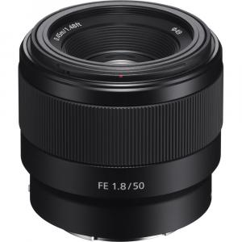

Lensa Canon RF 24-105mm f/4 L IS USM (dudukan RF)

Rp 450.000 / hari
Rp 900.000 / 3 hari
Sewa 2 hari GRATIS 1 hari
1 Hari = 24 Jam
Deskripsi Produk
Sony FE 50mm f/1.8 adalah lensa prime (fix) untuk kamera mirrorless Sony dengan dudukan E-Mount (FE). Lensa ini memiliki panjang fokus 50mm dan bukaan besar f/1.8, sehingga mampu menghasilkan foto yang terang dengan efek blur (bokeh) yang indah.